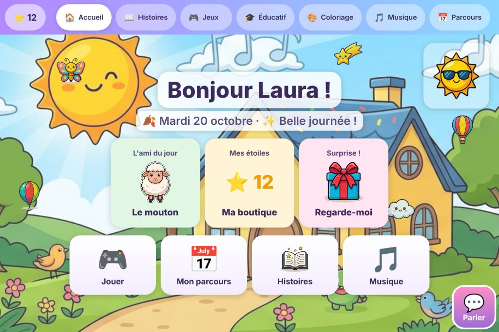
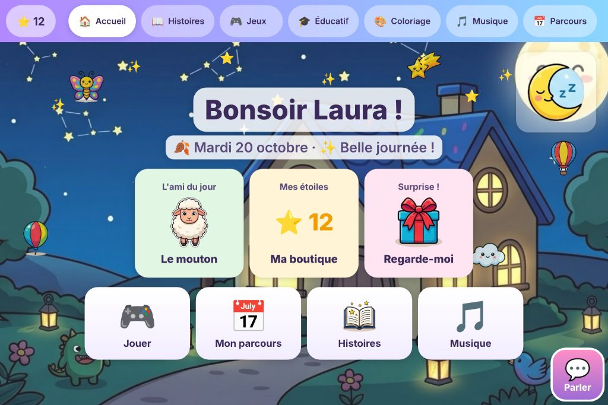
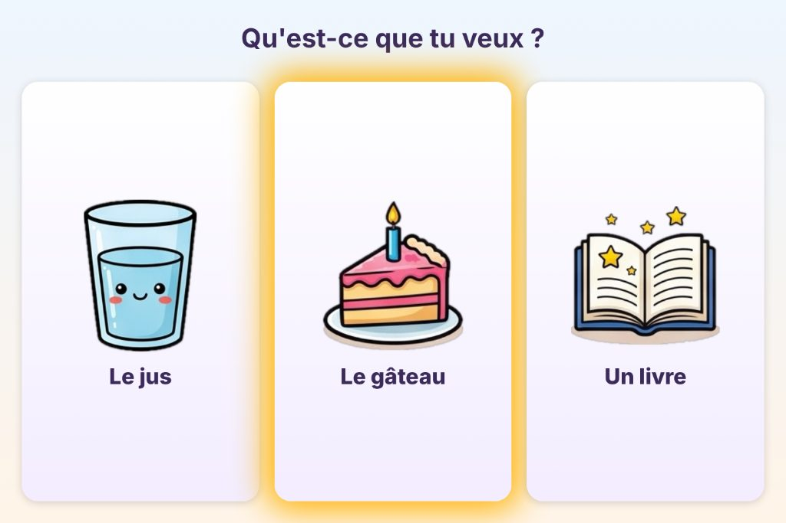
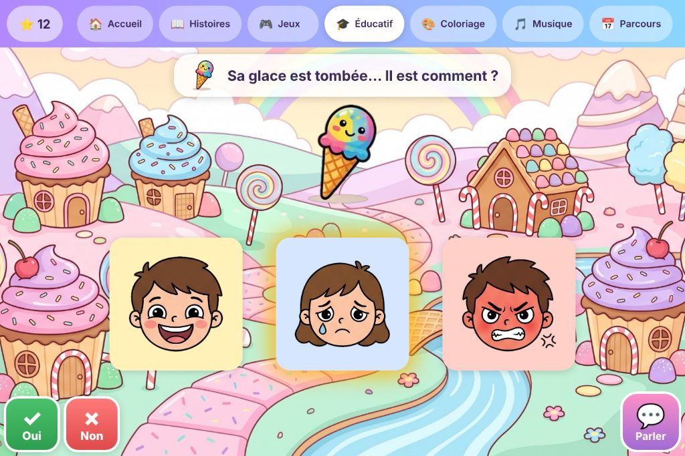
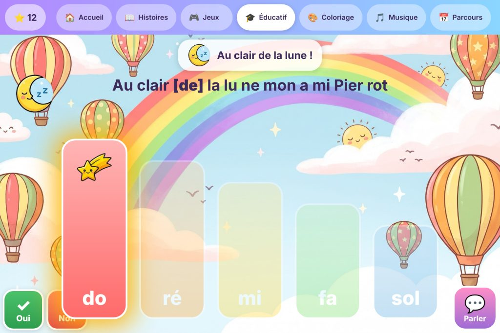
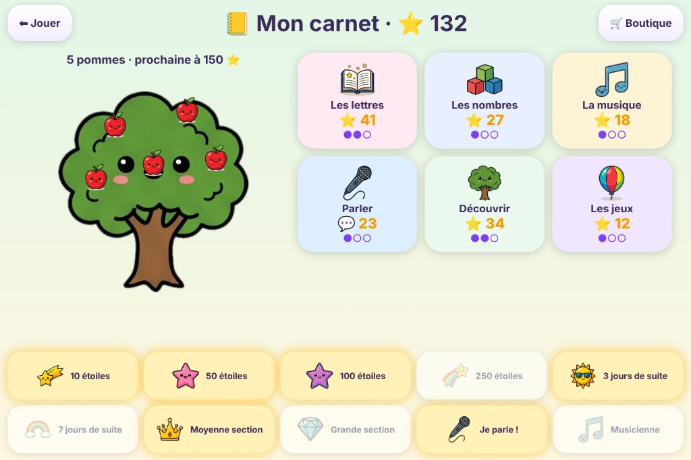

Eyzi — Guide utilisateur
Une application Windows pour jouer, parler et apprendre avec les yeux, pour les enfants de 4 à 7 ans. Elle se pilote à la commande oculaire (Tobii), au doigt ou à la souris.
Eyzi est en version bêta : elle marche, elle est utilisée tous les jours, et elle s'améliore avec les retours. La bêta est gratuite et limitée : 10 licences pour commencer, d'autres au fil des retours, jusqu'au 30 juin 2027. Vos remarques : eyzi.fr/retours.html, ou contact@eyzi.fr.
Ce guide s'adresse aux parents et aux accompagnants. La première partie explique l'installation et le premier démarrage, la deuxième ce que l'enfant voit, la troisième les réglages, la dernière ce qu'il faut savoir pour donner l'application à une autre famille.
1. Installer l'application
Ce qu'il faut
- Une tablette ou un PC sous Windows 10 ou 11.
- Pour la commande oculaire : un capteur Tobii avec son logiciel installé. Testés : TD I-13 et TD I-16, PCEye 5 (moteur direct, sans TD Control), Tobii Eye Tracker 4C et 5 (Tobii Experience), Tobii Pro (Nano, Fusion…). Toute autre commande oculaire qui déplace la souris (Irisbond, Lumin-i, TD Control, Computer Control) marche en mode « Curseur ». Appareils PRC-Saltillo Accent avec module Look : non testés ; il faut un appareil « open » (accès au bureau Windows) ; le module repose sur une plateforme Tobii, donc le pilote automatique peut le trouver directement, sinon le mode « Curseur » prend le relais. Sans capteur, l'application marche au doigt et à la souris.
- Pas encore : Mac, iPad, Android, Chromebook.
- Une connexion internet pour l'installation et les mises à jour (ensuite l'application marche hors ligne).
Les étapes
- Téléchargez Eyzi-Setup.exe sur eyzi.fr (ou la page des versions : github.com/nicolas1kowalski-blip/eyzi/releases). Le fichier fait environ 150 Mo : attendez que le téléchargement soit terminé avant de l'ouvrir. Tant qu'il est en cours, le navigateur affiche un fichier « .crdownload » (Chrome, Edge) ou « .part » (Firefox) ; s'il reste ainsi, le téléchargement a été interrompu : relancez-le.
- Deux avertissements sont normaux pour une application récente, pas encore signée par un certificat payant :
- Dans le navigateur (Edge : « n'est pas fréquemment téléchargé », Chrome : « fichier inhabituel ») : ouvrez la liste des téléchargements, passez la souris sur le fichier → menu … → Conserver → Afficher plus → Conserver quand même.
- En ouvrant le fichier, l'écran bleu « Windows a protégé votre ordinateur » : cliquez sur Informations complémentaires, puis Exécuter quand même.
- L'installeur est en français et ne demande aucun droit administrateur : il installe l'application dans le profil de l'utilisateur. Cochez « Lancer au démarrage de Windows » si la tablette est dédiée à l'enfant.
- À la fin, l'application se lance toute seule. Un raccourci « Eyzi » est sur le bureau et dans le menu Démarrer.
Pour désinstaller : Paramètres Windows → Applications → Eyzi → Désinstaller. Le contenu de la famille (photos, voix, livres) n'est pas supprimé.
2. Le premier démarrage
L'essai de 10 jours
Au tout premier lancement, vous pouvez choisir « Essayer 10 jours sans licence » : toutes les fonctions sont ouvertes pendant dix jours sur cette tablette. Les réglages affichent les jours restants. À la fin, l'application redemande un numéro de licence, que vous demandez sur eyzi.fr/licence.html (gratuite pendant la bêta ; réponse sous 48 heures en général). Pendant l'essai, le contenu reste sur la tablette : le nuage entre tablettes et les tableaux d'usage demandent une licence.
La licence
L'application demande un numéro de licence de la forme EYZ-XXXX-XXXX-XXXX-XXXX. C'est le numéro que l'éditeur vous a donné. Il sert à trois choses :
- il autorise l'application sur cette tablette ;
- il regroupe vos tablettes en une famille : toutes les tablettes activées avec le même numéro partagent leurs photos, voix et livres ;
- il dit à l'application si elle reçoit les versions test ou seulement les versions prod.
Sur le même écran, choisissez un mot de passe famille (6 caractères au moins). Tapez le même sur toutes vos tablettes. Il sert à chiffrer vos contenus avant qu'ils ne quittent la tablette : personne d'autre, pas même l'éditeur, ne peut les lire. Notez-le : s'il est perdu, les contenus déjà envoyés ne pourront pas être relus par une nouvelle tablette (ils restent sur les tablettes où ils sont).
La licence est vérifiée en ligne à l'activation, puis au plus une fois par jour. Sans réseau, elle reste valable 30 jours.
Elle comprend un ou plusieurs mondes : Jouer, Apprendre, Parler. Les licences de la bêta comprennent les trois. Un monde qui n'est pas dans la licence n'apparaît pas (ni sa porte sur l'accueil, ni sa pastille dans le menu du haut) ; les réglages indiquent les mondes compris. Si l'éditeur change les mondes d'une licence, l'application le voit à sa prochaine vérification en ligne (au plus tard le lendemain).
Elle est limitée à un nombre de tablettes (deux, en général). Quand elles sont toutes prises, une nouvelle tablette est refusée : sur l'ancienne, réglages → 🚫 Libérer cette tablette rend la place. Les réglages affichent toujours « tablettes : 1/2 ».
Le prénom de l'enfant
Juste après, l'application demande le prénom de l'enfant. Il est utilisé sur l'accueil (« Bonjour Laura ! ») et dans l'activité « Mon prénom ». On peut le changer plus tard dans les réglages.
Vos anciens contenus
Si vous utilisiez une version précédente (contenu dans OneDrive, dans Documents ou à côté de l'application), tout est rapatrié automatiquement au premier lancement dans le dossier de l'application. Rien à faire.
3. La commande oculaire
Comment ça marche
L'enfant regarde un bouton ; un petit cercle se remplit autour de son regard ; quand il est plein, le bouton est « cliqué ». C'est la durée de fixation (réglable, de très courte à longue). L'application peut aussi l'ajuster toute seule : plus l'enfant réussit, plus elle raccourcit.
Pendant que l'application parle, un bouton regardé est quand même pris en compte : il s'enfonce, et son action part dès la fin de la phrase. L'enfant ne croit jamais « avoir cliqué pour rien ».
Ce qui est en train d'être lu reste surligné en doré jusqu'à la fin de la phrase.
Si le capteur envoie bien ses échantillons mais ne voit aucun œil pendant douze secondes (diodes allumées, enfant hors de la zone, trop haut, trop près, lunettes qui reflètent), un bandeau le dit en bas de l'écran : « Le capteur ne voit pas les yeux ». Ce n'est pas une panne de l'application : il faut placer l'enfant bien en face, à 50 cm environ. Le message revient au plus toutes les deux minutes.
Les pilotes
Dans l'administration (appui long sur ⚙, page « Regard »), « Source du regard » propose :
- Auto : l'application choisit le meilleur pilote disponible (conseillé).
- Moteur Tobii direct : le même moteur que Grid 3 ; c'est celui qui marche le mieux sur les tablettes TD I-13 et PCEye 5.
- Regard direct (Tobii Experience) : pour les capteurs Tobii grand public.
- Curseur : marche avec n'importe quelle commande oculaire qui déplace la souris (TD Control, etc.).
Le pilote change à chaud, sans redémarrer.
Calibrer et vérifier
- 👁 Vérifier la position des yeux ouvre une fenêtre qui montre les deux yeux : l'enfant doit être bien dans le cadre, ni trop près ni trop loin.
- 🎯 Calibrer la tablette lance le calibrage du logiciel Tobii installé (sans passer par TD Control).
- 🎯 Régler la précision (étoile) : un mini-jeu où l'enfant suit une étoile ; l'application corrige un décalage éventuel.
- Lissage rend le regard plus stable (plus lent) ou plus réactif ; Taille du cercle change la taille de la cible. Couleur et épaisseur du cercle : neuf couleurs (violet d'origine, bleu, vert, orange, rouge, rose, jaune, noir, blanc) et trois épaisseurs de trait, pour que le cercle se voie bien sur les écrans que l'enfant utilise le plus, ou simplement pour lui plaire. La case Montrer seulement le cercle qui se remplit enlève le point rose qui suit le regard et le halo doré autour de la cible visée, pour un enfant que ces repères distraient : il ne reste que le cercle qui se remplit sur la cible.
4. Ce que voit l'enfant
L'accueil
« Bonjour Laura ! », la date du jour, l'ami du jour (un animal), les étoiles gagnées, une surprise, et un décor qui suit la journée : le soleil le matin, la lune et les étoiles le soir. Regarder le soleil ou la lune les fait parler. La carte « Dire bonjour » fait dire bonjour à voix haute (avec votre voix si vous l'avez enregistrée).
Les trois mondes
L'accueil propose trois grandes portes, et la barre du haut les garde toujours à portée d'un regard pour passer de l'une à l'autre : 🎮 Jouer (les jeux par thèmes, le coloriage, la musique), 🎓 Apprendre (l'éducatif, les histoires, le parcours du jour) et 💬 Parler (le tableau de communication en pleine page). Le bouton Accueil ramène au hall. La tuile Parler reste de toute façon accessible partout, comme canal d'urgence.
Ce que contient chaque monde
Tout en haut, toujours visibles :
- 📖 Histoires : les livres fournis (« La citrouille qui voulait un sourire », « Le panier de bonbons perdu », « Le voyage de la petite feuille dorée », « Le mystère des lanternes dansantes » : pages illustrées, zones à regarder et quiz de fin) et les vôtres (photos de la famille, texte lu à voix haute). Chaque livre choisit sa mise en page (image à gauche et texte à droite, ou image au-dessus du texte), et chaque page peut faire autrement : c'est dans l'éditeur de livre, en haut (pour le livre) et à côté de chaque page. Chaque livre peut aussi avoir son fond d'écran (une image derrière la page, choisie en haut de l'éditeur). Dans le lecteur, 🔊 Écouter raconte la page comme un conteur (phrase par phrase, avec une vraie pause après chaque point, plus longue après une question ou des points de suspension) ; pendant ce temps les boutons, les mots et les zones ne répondent pas, seul ⏹ Stop reste actif. Le mode lecture reste allumé de page en page : chaque page ouverte est racontée, jusqu'à ⏹ Stop. Quand le texte est fini (raconté, ou lu mot à mot par l'enfant), le bouton ➡ Suite s'illumine en orange et bat doucement : c'est lui que l'enfant regarde pour tourner la page. Après la dernière page, un écran Fin propose le quiz, relire l'histoire ou choisir un autre livre. Pour un plus jeune enfant, le mode jeune enfant (administration, page Enfant & jeux) remplace la lecture mot à mot par de grandes tuiles, une par phrase ou bout de phrase, chacune avec un picto : le personnage ou l'objet de l'image dont on parle (découpé dans l'illustration), sinon une image de la banque. L'enfant regarde la tuile et l'entend en entier.
- 🎮 Jeux : ballons, paires (seul ou à deux), cherche et trouve, le jeu magique, et le thème 🎪 Fête foraine : Chamboule-tout (regarder une boîte, la balle part là où l'enfant regarde et fait tomber ce qu'elle touche ; on peut viser entre deux boîtes pour en faire tomber deux d'un coup ; pyramide, mur, tours, deux pyramides ou château à chaque partie ; la sélection y est plus rapide qu'ailleurs ; boîtes plus petites et sans aimant du regard aux niveaux suivants), La pêche (suivre un poisson des yeux pour qu'il morde : les poissons ondulent, accélèrent, font demi-tour et lâchent des bulles sous l'eau ; le bouchon de la ligne glisse vers le poisson regardé, puis le poisson remonte en frétillant dans une gerbe et file dans le seau ; ils nagent plus vite au fil des niveaux), Patatou (habiller un bonhomme patate en choisissant yeux, nez, bouche, chapeau, nœud et bulle dans des galeries ; il prend vie quand il a un visage, et sa photo va dans le dossier Patatou) (dans Tartes à la crème, les visages rapetissent au fil des tartes et des manches gagnées, jusqu'au tiers de leur taille, et la zone qui lance la tarte se resserre sur le milieu du visage, marquée par un fin anneau pointillé : il faut poser le regard dedans, pas à côté ; au bout de 12 secondes sans tarte, le visage grossit et toute sa surface redevient la cible, et deux aides dans une manche font redescendre le niveau)… et le 🪞 Miroir magique : la caméra avant montre l'enfant en miroir ; son regard choisit dans une galerie d'images des déguisements qui suivent son visage (chapeaux, lunettes, bouches, moustaches, nœuds, bulles de BD…), change le monde autour, déforme le miroir, fait jaillir des étincelles là où il regarde, tire une surprise au sort et prend la photo, rangée dans le dossier Miroir du contenu de la famille. Si Windows interdit la caméra aux applications (Confidentialité → Caméra), le miroir le dit.
- 🎓 Éducatif : par thèmes — Les lettres (mon prénom, mot et image, lettres mobiles, rimes, syllabes), Les nombres (compter, un de plus, partager, la bande numérique), La musique, L'anglais, Découvrir (les émotions, « Range la maison », les contraires).
- 🧭 Mes leçons : le chemin des compétences, aligné sur le programme officiel de l'école maternelle (version consolidée 2024, BO du 31 octobre 2024 et du 7 mai 2026). Pour l'instant Les nombres (dénombrer, les chiffres, comparer, composer, la suite des nombres, le rang et la bande numérique, les petits problèmes) et Formes et grandeurs (formes planes, solides, grandeurs, motifs, puzzles faits des décors de l'application et, s'il y en a sur la tablette, des photos du dossier Famille, classer) ; les autres domaines suivront. Les seuils sont ceux du programme : PS = « à aborder avant 4 ans », MS = « à partir de 4 ans », GS = « à partir de 5 ans ». Chaque nœud est une compétence à un palier (PS, MS, GS). Ma leçon lance trois à cinq minutes d'exercices mélangés : la compétence du moment (sous plusieurs formes, les « axes »), une ou deux révisions, et des réussites faciles pour finir. Une compétence devient acquise quand chaque axe a été réussi au premier regard 4 fois sur 5, sur deux jours différents, puis qu'un défi de 6 exercices sans aide est réussi (5 sur 6). Elle est ensuite révisée à 3, 7, 21 jours puis 2 mois ; une révision ratée la marque « à consolider ». Sur le chemin : nœud grisé avec un cadenas = pas encore ouvert (le palier précédent doit être acquis), nœud avec une jauge = en cours, ⚡ = prêt pour le défi, bord doré avec ⭐ = acquis, 🔧 = à consolider. Les activités éducatives existantes restent disponibles à côté. Le détail par compétence et par axe est dans le 📊 Bilan, où l'accompagnant peut aussi marquer une compétence acquise à la main ou la remettre à zéro.
- 🎨 Coloriage : on regarde une zone, elle se colorie.
- 🎵 Musique : instruments à jouer avec les yeux (le son part dès que le regard se pose), xylophone, « Au clair de la lune » (la lame qui brille est la prochaine note ; rester dessus la rejoue), batterie, guitare à six cordes et piano à huit touches qui s'allument au regard, avec vingt chansons à jouer note après note, la corde ou la touche à jouer brille : des comptines (« Au clair de la lune », « Frère Jacques », « Ah ! vous dirai-je, maman », « Sur le pont d'Avignon », « Dans la ferme de Mathurin », la gamme…), six chansons de Noël (« Vive le vent », « Mon beau sapin », « Douce nuit », « Il est né, le divin enfant », « We Wish You a Merry Christmas », « Joie dans le monde »), trois chansons en anglais et deux classiques (« L'Hymne à la joie », « La berceuse de Brahms »). La guitare joue celles qui tiennent sur ses six cordes ; le clavier du piano s'élargit aux notes graves ou aiguës de la chanson.
- 📺 La télé (si une télé LG est réglée) : une télécommande au regard pour la télé de la maison, dix-huit grandes touches : allumer, éteindre, plus fort, moins fort, muet, pause, chaîne suivante et précédente, YouTube, Netflix, Disney+, le menu de la télé, les flèches, OK et retour. Chaque touche est dite quand elle est regardée.
- 📅 Parcours : une suite d'activités pour la séance du jour.
Parler, Oui, Non
Les boutons 💬 Parler (en bas à droite) et ✅ Oui / ✗ Non (en bas à gauche) sont à l'écran sur l'accueil et dans les menus. « Parler » ouvre le tableau de communication : je veux, j'ai mal, j'aime, encore, fini, ma journée, et au niveau 2 « Je fais une phrase ». Pendant une activité (jeu, histoire, coloriage), Oui / Non disparaissent (les jeux ont leurs propres réponses) et Parler reste, en plus petit et plus discret : c'est le canal d'urgence de l'enfant (j'ai mal, stop, fini). Ces deux comportements se règlent dans l'administration, page Enfant & jeux ; on peut aussi cacher les tuiles tout le temps. On peut aussi les déplacer : à la souris ou au doigt sur un écran tactile, attrapez la tuile et glissez-la où vous voulez ; elle reste à cet endroit, même après un redémarrage (un simple clic ou un regard garde son effet normal).
L'écoute : « Dis Eyzi »
La tablette peut écouter la personne qui parle à l'enfant et proposer aussitôt des réponses à regarder : « Tu veux du jus ou de l'eau ? » devient les cases Du jus, De l'eau, Les deux, Autre chose. L'enfant regarde une case, la tablette la dit. L'écoute est une surcouche : elle se pose sur n'importe quel écran, un jeu, une leçon, une histoire, le tableau, l'accueil, dès qu'on dit « Dis Eyzi » ou qu'on appuie sur le micro, et quand elle se referme, l'activité du dessous reprend exactement où elle en était. Pendant une leçon, une réponse donnée dans l'écoute ne compte ni comme bonne ni comme fausse dans l'exercice.
L'écran n'appartient qu'à l'enfant : la question en grand, les cases, et rien d'autre. Quatre moments : Parle-moi (l'attente, avec le raccourci 🧩 Mes mots vers le tableau et 💬 Je veux dire…), J'écoute (l'oreille rouge, la phrase qui s'écrit), la grille, puis le rebond : ce que l'enfant vient de dire, en grand et en vert, et des cases pour continuer la conversation (voir plus bas), avec Autre chose et Fini. En bas, la ligne grise de l'adulte : 🏠 revenir à ce qu'on faisait, 📷 et 🙂 la caméra, l'état de l'écoute, 👂 écouter une phrase.
Trois réglages (administration, page Parler & IA, carte 👂 Écoute) :
- Éteinte : rien n'écoute, c'est le réglage de départ.
- Bouton : dans Parler, un bouton 👂 J'écoute ; on appuie, on parle, la tablette transcrit la phrase.
- Mot-clé : la tablette veille, partout dans l'application, sur les mots « Dis Eyzi », puis écoute la phrase qui suit (« Dis Eyzi, tu veux du jus ou de l'eau ? »). Le mot-clé est reconnu sur la tablette, sans réseau et sans coût : rien ne part avant qu'il soit dit. Le modèle du mot-clé est livré avec l'application ; une écoute réglée sur « Bouton » passe d'elle-même en « Mot-clé » à la première mise à jour qui l'apporte (on peut revenir au bouton dans la carte Écoute). Le mot-clé a été entraîné en anglais, la seule langue que Microsoft propose, sur les sons « di i-zi » : dites « Dis Eyzi » naturellement, sans détacher les syllabes ; un mot proche (« easy », « dis-y ») peut parfois le réveiller à tort, il suffit alors de regarder la maison en bas pour fermer. La ligne grise du bas montre l'état : je veille, j'écoute, écoute prête.
Les réponses s'affichent en grandes cases avec un pictogramme ARASAAC, la banque que les orthophonistes et les écoles françaises utilisent (13 000 pictos : l'index complet et un noyau de 1 500 images sont livrés, les autres se téléchargent à la demande et restent sur la tablette ; secours Mulberry, 3 400 pictos livrés). Le tableau de communication utilise les mêmes pictos ARASAAC, sauf pour les tuiles avec une photo de la famille, la photo d'un proche ou l'image du tableau ; jusqu'à 8 réponses pour une question ouverte, 3 grandes cases pour une question à oui ou non. Les cases apparaissent une à une à mesure que l'IA les écrit, et la grille part dès que la phrase est stable, avant même que la personne ait fini de parler. Le bouton de lieu (dans le monde Parler, au-dessus du tableau) (🏠 Maison, 🏫 École, 🌳 Dehors, 🚗 Voiture) dit à l'IA où est l'enfant : à l'école, les réponses parlent des copains et de la maîtresse ; à la maison, de la famille et des jouets. Le lieu se règle aussi tout seul d'après le Wi-Fi : la première fois que la tablette voit un réseau (celui de la maison, celui de l'école, le partage de connexion du téléphone dans la voiture), le bandeau de Parler demande « 📍 on est où ? », à la souris ou au doigt, puis s'en souvient. Le nom du réseau reste sur la tablette ; les réseaux appris se voient et se corrigent dans l'administration, page Parler & IA, carte 📍 Où est l'enfant, où l'on peut aussi désactiver ce réglage automatique. Sans Wi-Fi, le lieu reste celui du bouton. L'IA tient aussi compte du jour (école ou week-end), de ce que l'enfant a fait sur la tablette dans la journée, et des réponses qu'elle choisit le plus souvent, qui remontent en premier. Les réponses tiennent compte de l'âge de l'enfant, du moment de la journée (au petit-déjeuner, on propose une tartine, pas des pâtes) et de ce que la famille a écrit dans la page Enfant, « ce qu'elle aime, ce qu'elle n'aime pas, ses habitudes » : ses goûts passent en premier. Ce texte ne quitte la tablette qu'avec une phrase à répondre.
Il faut la clé Azure Speech de la page Voix (la même ressource fait la voix et l'écoute ; la reconnaissance se facture à l'usage, le mot-clé est gratuit). Les réponses proposées viennent d'une intelligence artificielle via eyzi.fr : seul le texte de la phrase est envoyé, jamais le son ; la case « Proposer des réponses » peut être décochée, la tablette propose alors des réponses simples (oui, non, les deux côtés d'un « ou », encore, autre chose). Une famille qui ne veut pas d'un micro qui veille laisse l'écoute sur Éteinte ou sur Bouton.
« Regarde » : la caméra au service de la question
Quand la case Autoriser la caméra est cochée (⚙ → Parler & IA → carte Écoute), une photo peut partir avec la question, et l'IA propose des réponses sur ce qu'elle voit.
- « Dis Eyzi, regarde », ou le bouton 📷 de la ligne du bas : la caméra arrière photographie ce que l'adulte montre. Deux yaourts dans les mains, l'assiette du goûter, deux vêtements, la page d'un livre d'images : chaque chose devient une case. « Regarde, tu veux lequel ? » suffit ; « regarde » tout seul demande « Qu'est-ce que tu vois ? Qu'est-ce que tu veux ? ».
- « Dis Eyzi, regarde Laura » (le prénom de l'enfant, ou « regarde-moi »), ou le bouton 🙂 : la caméra avant regarde l'enfant, et la tablette lui propose ce qu'elle ressent peut-être : Je suis fatiguée, Je suis contente, J'ai mal, Ça va, Autre chose. L'IA propose, l'enfant confirme avec ses yeux : jamais une affirmation sur son état, toujours une question douce. C'est une amorce pour l'adulte qui ne sait pas quoi demander, pas un verdict.
La photo s'affiche en petit à gauche de la question, pour que l'enfant voie ce que la tablette a vu. Elle est prise une seule fois par demande, avec un flash et un déclic, réduite à 1 024 pixels, envoyée à eyzi.fr avec la question, puis oubliée : elle n'est jamais enregistrée, ni sur la tablette, ni sur le site, ni dans les journaux. La consigne donnée à l'IA lui interdit de nommer ou de décrire les personnes. La caméra est désactivée tant que la famille ne l'a pas autorisée. Si Windows interdit la caméra aux applications (Réglages Windows → Confidentialité → Caméra), la question part sans image et la ligne du bas le dit.
Un mot sur le droit : la lecture des émotions par une machine est encadrée en Europe, et interdite à l'école sauf à des fins médicales ou d'assistance. Eyzi est une aide à la communication d'un enfant handicapé : la fonction est activée par la famille, elle ne garde aucune photo ni aucune note d'humeur, et l'enfant reste seul à dire ce qu'il ressent.
« Je veux dire… » : parler sans qu'on lui demande
Tout commence d'habitude par une question de l'adulte. Le bouton 💬 Je veux dire…, dans le monde Parler et dans l'écran d'attente de l'écoute, propose à l'enfant ce qu'il pourrait vouloir dire maintenant, sans question, y compris des questions qu'il pose à l'adulte (On fait quoi après ?, Maman arrive quand ?, Tu viens jouer avec moi ?) : à l'école le matin, Je veux aller aux toilettes, J'ai mal, Je veux jouer avec un copain ; à la maison à 16 h, Je veux mon goûter ; le soir, Je veux mon doudou. Les propositions viennent de l'IA d'après le lieu, l'heure, le jour, la fiche de l'enfant et ses habitudes ; elles sont demandées au plus huit fois par jour et gardées trois heures pour un même moment, ce qui garde le coût dérisoire. Sans réseau, une liste toute faite selon le lieu et l'heure prend le relais.
Une vraie conversation : les rebonds, et l'adulte réécouté
Une question, une réponse, et c'est fini : ce n'est pas une conversation. Depuis la version 231, après que l'enfant a regardé une case, l'écran montre ce qu'il a dit (en grand, en vert, avec son picto) et lui propose des rebonds : ce qu'il pourrait vouloir dire ensuite. Une précision (« Du jus » → Avec une paille), une envie qui va avec (Et un gâteau), une question à l'adulte (Et toi ?, On y va quand ?, Tu viens avec moi ?), un mot de lien (Merci, Je t'aime), et toujours une case inattendue mais utile (un besoin, un ressenti). Puis Autre chose et Fini. L'enfant peut enchaîner plusieurs rebonds : chacun est dit par la tablette, et compte comme une phrase à lui, qu'il a ajoutée de lui-même.
Pendant ce temps, le micro réécoute l'adulte : dès que la tablette a fini de dire la réponse, elle écoute quelques secondes la réplique de l'adulte, sans qu'il redise « Dis Eyzi ». La phrase s'écrit en petit sous ce que l'enfant a dit, puis la grille revient avec la nouvelle question. Si personne ne parle, la veille sur le mot-clé reprend d'elle-même. Un échange peut ainsi aller et venir : « Tu veux boire quoi ? » → Du jus → Avec une paille → « La paille rose ou la bleue ? » → La rose → Merci …
L'IA suit le fil de la journée : les dix derniers échanges au moins (la question, les cases proposées, ce que l'enfant a répondu, ce qu'il a ajouté de lui-même, et les fois où aucune case ne convenait), avec qui parlait et il y a combien de temps. Une question qui revient sur ce qui vient d'être dit (« Et après ? », « Lequel ? ») se comprend avec l'échange d'avant ; ce que l'enfant a dit il y a cinq minutes compte encore ; ce qui date du matin compte moins. Le fil est gardé sur la tablette (fichier conversation.ini dans le dossier de l'application), effacé chaque jour, et n'est envoyé qu'à eyzi.fr, en texte, avec la question du moment. La fiche de l'enfant (page Enfant & jeux), ses habitudes et ses réponses préférées partent aussi avec chaque question : plus la famille décrit l'enfant, plus les cases sont les siennes.
La case 💬 Conversation de la carte Écoute (⚙ → Parler & IA) éteint les rebonds et la réécoute automatique ; la tablette revient alors à la confirmation simple.
Ne pas enfermer l'enfant : « Autre chose », « Pas ça » et les thèmes
Les cases proposées sont un point de départ, jamais un périmètre. Trois garde-fous, toujours présents :
- 🤔 Pas ça : sur toutes les grilles, une dernière case pour dire qu'aucune réponse ne convient, ou qu'il veut réfléchir. La tablette dit « Ce n'est pas ça… je réfléchis » et ouvre les thèmes.
- 💭 Autre chose : la case proposée par l'IA (et celle des rebonds) ne referme plus l'écoute : elle ouvre les thèmes.
- Les thèmes : seize grilles très complètes, de 18 à 35 mots chacune, huit par page : Manger, Boire, Les gens (les proches du tableau de communication avec leurs photos d'abord), Aller où ?, Je ressens, Faire, Les jouets, Mon corps (où j'ai mal), L'école, Les habits, Les animaux, Dehors, Quand ?, Je demande (des questions à poser à l'adulte), Les fêtes, Les couleurs. La question reste écrite en haut : le mot choisi y répond, il est dit, retenu comme habitude, et les rebonds suivent. Depuis les thèmes, 🧩 Mes mots ouvre le tableau de communication de l'enfant, ↩ Revoir les cases ramène la grille proposée. L'enfant peut donc répondre à côté de la question, ou aller tout à fait ailleurs : « Tu veux du jus ou de l'eau ? » → Autre chose → Mon corps → J'ai mal au ventre.
Dans le tableau de bord d'eyzi.fr, la colonne À côté compte, pour chaque famille, les fois où aucune case ne convenait (« Autre chose », « Pas ça ») en part des questions : un taux élevé veut dire que les propositions enferment l'enfant, et c'est l'IA qu'il faut corriger, pas l'enfant.
Les habitudes : des réponses qui deviennent les siennes
Chaque réponse regardée est retenue avec sa question. Quand une question proche revient (« Quel yaourt tu veux ? » après « Tu veux quel parfum de yaourt ? »), ce que l'enfant a déjà choisi est donné à l'IA, qui le met en premier. Les propositions ne sont plus celles d'un enfant en général, mais les siennes. Un choix récent pèse plus qu'un ancien (le poids d'un choix est divisé par deux tous les deux mois), sans que rien soit oublié. Ce savoir est écrit dans le dossier de la famille (un fichier habitudes-<tablette>.ini par tablette) : il voyage avec le contenu de la famille et les tablettes se le partagent. La carte Écoute montre combien de choix ont été retenus et permet de les oublier.
La veille fatigue
Sans caméra ni IA, le regard lui-même dit quand l'enfant n'en peut plus. Pendant un jeu, une leçon ou une histoire, la tablette relève l'agitation du regard mesurée par le moteur de fixation et les erreurs qui s'enchaînent. Quand l'agitation dépasse nettement et durablement celle du début de la séance, ou que quatre erreurs se suivent sans réussite, l'écoute s'ouvre d'elle-même avec « Tu es fatiguée ? On arrête ? » et quatre cases : Oui, je suis fatiguée, Non, je continue, Je veux autre chose, Je veux un câlin. Au plus une fois toutes les dix minutes, jamais dans les trois premières minutes de jeu. La case « Veille fatigue » de la carte Écoute l'éteint.
La télé de la maison (LG)
Les télés LG (webOS, 2014 et après) se pilotent par le réseau, comme avec les applications télécommande des téléphones. Dans l'administration, page Maison connectée, carte 📺 La télé de la maison : cliquez 🔍 Chercher la télé (télé allumée, sur le même Wi-Fi que la tablette), ou tapez son adresse (Réglages de la télé → Réseau → Connexion). Puis 🔗 Associer : la télé affiche « Autoriser Eyzi ? », acceptez avec sa télécommande ; c'est à faire une seule fois. La tuile 📺 La télé apparaît alors dans le monde Jouer.
Pour que la touche Allumer marche quand la télé est éteinte, activez dans la télé : Réglages → Général → Appareils externes (ou Réseau) → Allumage via mobile (« Quick Start+ » sur certains modèles) ; Eyzi retient l'adresse matérielle de la télé à l'association. Sur les télés récentes, l'allumage par Wi-Fi peut prendre quelques secondes. Si la box change l'adresse de la télé, donnez-lui une adresse fixe dans la box, ou refaites « Chercher la télé ». Rien ne sort de la maison : la tablette parle directement à la télé.
Créer sa clé Azure, en dix minutes
La voix naturelle en ligne et l'écoute passent par le service Azure Speech de Microsoft. Chaque famille crée sa propre clé, gratuite pour un usage familial, et la saisit dans l'application. L'éditeur ne la connaît jamais.
- Allez sur portal.azure.com et créez un compte Microsoft si vous n'en avez pas (une carte bancaire est demandée pour vérifier l'identité ; l'offre gratuite ne prélève rien).
- En haut, cherchez Speech (ou « Services de parole ») et cliquez Créer.
- Remplissez : Abonnement (le vôtre), Groupe de ressources : créez-en un, par exemple
eyzi, Région : France Central, Nom : par exemplevoix-prenom, Niveau tarifaire : Free F0. Puis Vérifier + créer, puis Créer. - Une fois la ressource créée, ouvrez-la et cliquez à gauche sur Clés et point de terminaison. Copiez la CLÉ 1. La région est écrite juste en dessous :
francecentral. - Dans Eyzi, ouvrez l'administration (⚙), page Voix : collez la clé dans Clé Azure et écrivez
francecentraldans Région. Cliquez 🔑 Tester la clé Azure : « ✅ la clé est bonne » ou « ❌ refusée (401) » avec la raison. Ne vous fiez pas à « Écouter un exemple » pour ça : si Azure refuse la clé, l'exemple joue la voix hors ligne sans le dire. L'écoute utilise la même clé.
Ce que ça coûte. Le niveau Free donne chaque mois environ cinq heures de reconnaissance vocale et un demi-million de caractères de voix naturelle, sans frais. C'est largement assez pour une famille : l'écoute ne tourne que pendant la phrase posée, pas toute la journée, et le mot-clé « Dis Eyzi » est reconnu sur la tablette, sans Azure. Si vous dépassez, le service s'arrête jusqu'au mois suivant ; il ne facture rien tant que vous restez en Free F0. Vous pouvez passer en Standard S0 plus tard, à l'usage, si le besoin vient.
Si ça ne marche pas : vérifiez que la région saisie est bien celle de la ressource (une clé de France Central ne marche pas avec une autre région), que la clé est complète (32 caractères, sans espace) et que la tablette a Internet. Si l'écoute est allumée, le bandeau d'écoute du monde Parler affiche l'erreur Azure en clair (voyant orange).
Écouter ou choisir : la règle
La voix appartient à l'écran. Trois sortes de phrases :
- La narration (bonjour et la date sur l'accueil, le nom d'un menu, la présentation d'un jeu) ne bloque jamais : l'enfant peut choisir une tuile pendant qu'elle parle, et dès qu'il change d'écran, elle se tait, phrase en cours et phrases en attente comprises.
- La consigne (la question à laquelle il doit répondre dans un jeu) va au bout la première fois : le cercle du regard ne se remplit pas sur les réponses et une oreille 👂 reste affichée sur la bulle de consigne. Jamais plus de 12 secondes. Répétée (bouton 🔊, tour suivant identique), elle ne bloque plus. Quitter le jeu ou ouvrir Parler reste toujours possible.
- Le retour (« Bravo ! », « Non, c'est le L ») : un clic sur une réponse le coupe et agit tout de suite ; les enchaînements automatiques, eux, attendent qu'il soit fini.
Je choisis
Le bouton 🙋 Je choisis (réglages) affiche 2 à 4 images que vous choisissez (le jus, le gâteau, un livre…). L'enfant regarde celle qu'il veut, l'application la dit. Idéal pour les vrais choix du quotidien.
Les étoiles, le carnet, la boutique
Chaque réussite donne une étoile. Mon carnet montre l'arbre à pommes (une pomme tous les 25 étoiles), les étoiles par domaine, les badges (10, 50, 100 étoiles, 3 jours de suite, Je parle !…). Dans la Boutique, l'enfant dépense ses étoiles contre des surprises : le grand feu d'artifice, la fête des ballons, une chanson, une vidéo de sa famille.
Le niveau
Trois niveaux : 🌱 Petite section (2 choix, nombres jusqu'à 5), 🌿 Moyenne section (3 choix, jusqu'à 7), 🌳 Grande section · CP (4 choix, jusqu'à 10). En Automatique, l'application monte d'un niveau après 20 réponses avec 85 % de réussite et redescend sous 40 %. On peut fixer le niveau à la main.
La pause
Après 10 minutes de jeu (réglable : jamais, 5, 10, 15, 20), l'application demande « on continue encore un peu, ou on fait une petite pause ? ». La pause joue un peu de musique, et on reprend quand on veut.
5. L'administration (bouton ⚙, réservée à l'accompagnant)
Ouvrir : maintenez le bouton ⚙ (en haut à droite) appuyé une seconde, à la souris ou avec le doigt sur l'écran tactile. Un clic bref ne l'ouvre pas, et le regard ne peut jamais l'ouvrir : la commande oculaire ignore ce bouton, et un clic injecté par une commande oculaire (TD Control compris) est toujours trop court. Tant que le panneau est ouvert, le regard est en pause : seuls la souris et le doigt agissent. ✕ Fermer (en haut à droite du panneau) rend la main à l'enfant.
Le panneau est rangé en huit pages (menu à gauche), chacune ouverte par une ligne qui dit à quoi elle sert :
- 👁 Regard : quatre cartes. Pilotage au regard (piloter au regard, ajustement automatique de la fixation, source du regard) ; Temps de fixation et stabilité (durée de fixation, lissage) ; Le curseur du regard, avec un aperçu qui montre le résultat : taille, couleur (neuf choix) et épaisseur du trait, remplissage sur le bord ou en camembert, une image à la place du cercle (étoile, cœur, ballon, soleil, fleur, papillon, lune, ou votre image
curseur.pngdans le dossier Images de la famille : elle grandit à mesure que la fixation avance), et cinq cases, toutes décochées d'origine : seulement le curseur qui se remplit (sans le point rose ni le halo doré), curseur caché au repos, un petit « tic » à chaque sélection, gros contraste (trait épais noir cerclé de blanc, pour un enfant qui voit mal), une couleur par monde ; Calibrage et précision (vérification des yeux, calibrage Tobii, réglage éclair, réglage de la précision). - 🧒 Enfant & jeux : prénom, âge et profil de l'enfant, niveau des jeux, pause après N minutes, tuiles « Parler » et « Oui / Non » (visibles ou non, bouton pour les remettre à leur place), « Je choisis », histoires en mode jeune enfant.
- 🏠 Maison connectée : ce que l'enfant pilote du regard dans la maison : la télé LG, le compte Spotify (Client ID et connexion ; les musiques s'ajoutent dans le monde Jouer), et bientôt les prises et ampoules connectées.
- 💬 Parler & IA : l'écoute « Dis Eyzi » (mode, réponses proposées par l'IA), la caméra pour « regarde », la veille fatigue, les habitudes apprises, le lieu d'après le Wi-Fi. La clé Azure qui sert à l'écoute se règle dans la page Voix.
- 🔊 Voix : voix Windows et hauteur, voix naturelle Azure, écouter un exemple, 🎙 Enregistrer vos voix.
- 📁 Contenu : 🔧 outils d'édition (une fois le panneau fermé, les outils pour ajouter, modifier ou supprimer les livres, coloriages et photos apparaissent dans les activités ; le regard reste en pause tant que la case est cochée), photos de famille, dossier du contenu, exporter / importer.
- ☁️ Licence & nuage : 🔒 code d'accès à l'administration (4 chiffres, optionnel : une fois réglé, l'appui long sur ⚙ demande ce code, à taper à la souris ou au doigt, le regard étant en pause ; trois erreurs ferment la fenêtre), licence, mises à jour, version précédente, libérer la tablette, synchronisation entre tablettes.
- 📊 Suivi : bilan de la semaine, bilan de la session, rapport du regard.
- 🛠 Avancé (versions de test seulement) : état technique du pilote, journal, réglages du serveur.
En bas du panneau : plein écran, réduire, quitter Eyzi.
Dans le détail :
- 👧 Prénom de l'enfant.
- Voix : trois moteurs possibles, choisis dans « Le moteur de la voix ». La voix naturelle hors ligne (livrée avec l'application, sans Internet : la même voix que les sons, les lettres et les syllabes) est utilisée par défaut ; la voix Windows (avec réglage de hauteur) reste disponible ; la voix naturelle Azure (en ligne, clé à saisir) devient prioritaire si une clé est saisie, avec repli automatique hors ligne. La première phrase d'un écran peut mettre une demi-seconde avec la voix hors ligne, puis elle est gardée en mémoire. 🎙 Enregistrer vos voix : vos « Bravo ! » et « Bonjour ! » remplacent la voix de synthèse aux moments forts. Dans la même fenêtre, les sons (a, o, i, ou, on, ette, u, an, in) : chaque son est livré avec une voix française enregistrée (les jeux de rimes et la maison des sons ne passent plus par la synthèse pour un son isolé) ; si vous préférez votre propre voix, enregistrez-le ici et il sera joué à la place. Même chose pour les lettres de l'abécédaire (le bruit de chaque lettre, « beuh », « ffff »…) : livrées enregistrées, remplaçables par votre voix.
- 📊 Bilan : la semaine, les niveaux, les étoiles, les mots dits.
- 📁 Le contenu de la famille : photos, voix, livres, coloriages et images ajoutées vivent dans
%LocalAppData%\MesPremiersJeux\Contenu. 📦 Exporter fabrique un seul fichier (sauvegarde ou copie vers une autre tablette avec 📥 Importer). - ☁️ Le nuage : si l'éditeur a configuré le serveur, le contenu voyage tout seul entre vos tablettes (récupéré au démarrage, envoyé à la fermeture), chiffré avec votre mot de passe famille. Deux boutons pour forcer : Envoyer maintenant / Récupérer maintenant. Les réglages de la famille voyagent avec le contenu : la clé Azure et la région, le mode d'écoute, l'âge et le profil de l'enfant, la télé, les réseaux Wi-Fi appris. Réglés sur une tablette, ils partent vers le nuage une minute plus tard (et à la fermeture), et descendent sur les autres à leur prochain démarrage (ou avec Récupérer maintenant). La tablette qui a changé un réglage le plus récemment gagne, mais une tablette prend toujours ce qui lui manque : sans clé Azure, elle prend celle des autres même si ses propres réglages sont plus récents ; une tablette sans clé n'efface jamais la clé des autres, et l'écoute ne s'éteint jamais à distance (une tablette où elle est éteinte ou sans réponses proposées n'impose pas ce choix aux autres). Il faut le même mot de passe famille sur chaque tablette (bouton « Changer la licence ») : sans lui, le nuage reste « pas prêt » et rien ne voyage, ni contenu ni réglages ; la ligne d'état de la page Nuage le dit. Pour corriger une clé fausse sur une tablette : saisissez la bonne sur l'une, Envoyer maintenant, puis Récupérer maintenant sur l'autre.
- 🔑 Licence et mises à jour : la licence active (famille, canal, tablettes utilisées), la version installée, 🔄 Vérifier les mises à jour, ↩ Version précédente, 🔑 Changer la licence, 🚫 Libérer cette tablette (changement de poste : la place redevient libre, l'application se ferme et redemandera une licence ; le contenu reste sur la tablette).
6. Les mises à jour
L'application se met à jour comme une application du Store : au démarrage, elle regarde s'il existe une version plus récente de son canal, la télécharge, vérifie son empreinte, l'installe et se relance. Pendant l'installation, une petite fenêtre de progression reste à l'écran ; au redémarrage, l'écran « Eyzi démarre… » indique chaque étape (préparation des activités, réglages, regard) jusqu'à ce que l'application soit prête. Les mises à jour sont légères (une vingtaine de Mo) : la voix naturelle hors ligne, qui pèse 200 Mo et ne change presque jamais, n'est retéléchargée que lorsqu'elle change vraiment. Le contenu de la famille et les réglages ne sont jamais touchés.
- Canal test : reçoit toutes les versions, dès qu'elles sont compilées. Pour les tablettes qui servent à essayer.
- Canal prod : reçoit seulement les versions promues, une fois testées. Pour les tablettes de tous les jours.
Le canal est porté par la licence. ↩ Version précédente réinstalle la version d'avant (les trois derniers installeurs sont gardés sur la tablette).
7. Les données et la sécurité
- Tout est sur la tablette : réglages, contenu, journal, progrès. Sans licence activée, rien ne part, à une exception près : pendant l'essai de 10 jours, les compteurs d'usage décrits plus bas sont envoyés sous un identifiant de tablette haché (pas de nom de machine, pas de nom de famille), pour savoir ce que les essais utilisent.
- Vers le nuage ne partent que des fichiers chiffrés (AES-256) avec votre mot de passe famille. Le serveur, et l'éditeur, voient un fichier illisible.
- Chaque famille a son espace, cloisonné par le serveur : une tablette d'une famille ne peut pas lire une autre famille.
- Le numéro de licence n'est pas un secret absolu (quelqu'un qui l'a peut activer une tablette de votre famille, dans la limite du nombre autorisé) ; le mot de passe famille, lui, protège vos contenus. Ne les écrivez pas au même endroit.
- L'application envoie à l'éditeur, une fois par jour, des compteurs d'usage : par jour et par activité, le nombre d'ouvertures, de réussites et de minutes, avec le nom de la tablette. Rien d'autre : ni le prénom, ni les photos, ni les voix, ni ce qui a été dit. Ils servent à savoir ce qui est utilisé et ce qui ne l'est pas, pour améliorer l'application.
- Le journal (
%LocalAppData%\MesPremiersJeux\journal.txt) note ce qui se passe (jeux, erreurs). En cas de plantage, un fichierplantage-<tablette>.txtest écrit dans le dossier du contenu : envoyez-le à contact@eyzi.fr.
8. Problèmes fréquents
L'écran bleu « Windows a protégé votre ordinateur » : Informations complémentaires → Exécuter quand même.
Le regard ne fait rien : vérifiez que le logiciel Tobii voit les yeux (👁 Vérifier la position des yeux), puis essayez « Moteur Tobii direct » dans Source du regard, puis calibrez (🎯).
Le cercle se remplit trop vite / trop lentement : Durée de fixation, ou cochez « Ajuster tout seul ».
La voix parle en retard ou coupe : avec la voix Azure, vérifiez le réseau ; sinon passez en voix Windows. La phrase en cours se termine toujours avant la suivante.
« Le serveur de licences n'est pas configuré » : installez la dernière version depuis eyzi.fr ; si le message reste, écrivez à contact@eyzi.fr.
L'application s'est fermée toute seule : relancez-la, puis regardez journal.txt (lignes [plantage]) et envoyez le fichier plantage-…txt.
Je change de tablette : installez, activez avec le même numéro et le même mot de passe famille ; le contenu descend tout seul (ou 📦 Exporter / 📥 Importer sans réseau).
Les images de ce guide et de la vidéo sont des maquettes des écrans de l'application, faites pour illustrer ; les vrais écrans peuvent différer légèrement selon la version et la tablette.





